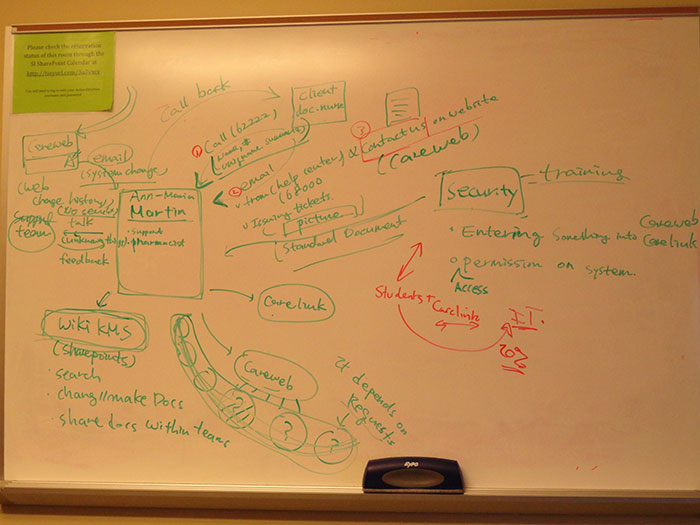

We had a group project in the course Contextual Inquiry and Project Management, in which we conducted interviews, built up different models, identified breakdowns, and provided recommendations based on our findings. MCIT ECS Support center is responsible for supporting the end users with using the health systems: CareWeb and CareLink. There are four teams involved in this workflow. The Business analyst team decide whether to make a change to the workflow; the implementation team is responsible for implementing the changes; the supporting team is responsible for supporting end users using the systems; end users, including physicians, pharmacists, medical school students and so on, are using the system to accomplish their workflow. When the system changes are implemented, end users who are not familiar with the system would call in to ask for support.
The major problem we identified is that the support team is notified of the system changes at the same time as the end users so that they do not have enough time to prepare themselves for the supporting requests. Our recommendation is that the support team be informed one or two days before the system changes are implemented.
The second problem we identified is that the support team and the business analyst team locate in different places which are far away from each other. These two teams even not know each other. This created a barrier in the communication. However, it is impossible to move them together. Our recommendation is that let the support team involve in process of deciding whether to make system changes.
